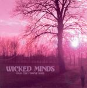

Home Artist links Label link

Wicked Minds - From The Purple Skies
| Artist: | Wicked Minds |
| Title: | From The Purple Skies |
| Label: | Black Widow BWRCD 076-2 |
| Length(s): | 78 minutes |
| Year(s) of release: | 2004 |
| Month of review: | [06/2005] |
Line up
Lucio Calegari - guitars, voices, tambourine, footswitches, tubes
Paolo Negri - hammond, mellotron, moog, electric & grand piano
J.C. - lead vocals, harmony flights
Andrea Concarotti - drums & percussion
Enrico Garilli - bass
Tracks
| 1) | From The Purple Skies | 6.08
|
| 2) | The Elephant Stone | 6.33
|
| 3) | Drifting | 7.40
|
| 4) | Across The Sunrise | 8.53
|
| 5) | Forever My Queen | 2.56
|
| 6) | Rising Above | 7.03
|
| 7) | Queen Of Violet | 6.19
|
| 8) | Space Child | 9.08
|
| 9) | Gypsy | 5.22
|
| 10) | Return To Uranus | 18.14
|
Summary
The music
Opener From The Purple Skies sets the tone for this album: the organ, the rhythm of the track and the vocals (including the occasional high note) are stylistically very close to Deep Purple in the early to mid seventies. The tempo reminds me a little of Lady Starstruck (or was it Highway Star?). And as far as the instruments go: looks like the old stuff alright.
The Elephant Stone takes some off the tempo, sounding more like a rock ballad. The organ remains highly present, though. Later on we also see (or rather: hear) flute blended in.
As the album's title would suggest, it can be seen as an hommage to Deep Purple. The guitars are a little less hardrock oriented then with the original, I would guess, but however you spin it, you can't get around the fact that this is a Deep Purple fan album.
The album is a bit on the long side, especially if you consider that tracks like Space Child and Return to Uranus have some bits that could easily have been left out. Space Child has a pretty decent climax, though.
The vocals are accented, and at times badly articulated. I found both irritate me at times. The lack of articulation also seems to indicate a lack of vocal control which at the end of the day does not sound good.
Conclusion
After having listened to this album several times I remember quite well what Deep Purple were about. I still haven't the faintest idea who Wicked Minds are. The band are not a cover band from a literal point of view, since they play their own compositions. These, however, are so closely DP based that the band can not be seen as standing on their own.
The compositions are pretty good most of the time and a case can be made for closing your eyes and forgetting who you're listening too. Deep Purple lives, but look at this album for melancholic purposes only.
© Roberto Lambooy